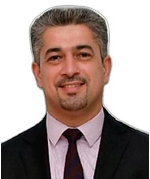

Profil
Elvin Əfəndi 2022-ci ilin yanvarından Ciddədə İslam İnkişaf Bankı Qrupunun İslam Özəl Sektorunun İnkişafı Korporasiyasında korporativ strategiya və tədqiqat bölməsinin rəhbəridir. 2006–2008-ci illərdə Bakı Dövlət Universitetində iqtisadiyyat üzrə PhD dərəcəsi alıb. Dissertasiya Essays on Pro-poor Growth adlanır. 2003–2005-ci illərdə Azərbaycan Dövlət İqtisad Universitetində iqtisadiyyat üzrə magistr, 1999–2003-cü illərdə bakalavr dərəcəsi alıb. 2009–2010-cu illərdə Miçiqan Ştat Universitetində inkişaf iqtisadiyyatı üzrə post-graduate təhsil keçib. Dar Al-Hekma Universitetində, Azərbaycan Dövlət İqtisad Universitetində və Xəzər Universitetində dərs deyib.
İş təcrübəsi
İslam Özəl Sektorunun İnkişafı Korporasiyası, İslam İnkişaf Bankı Qrupu, Ciddə, Səudiyyə Ərəbistanı
yanvar 2022–hazırdaKorporativ strategiya və tədqiqat bölməsinin rəhbəri
- Strategiya departamenti
ICD, İslam İnkişaf Bankı Qrupu, Ciddə, Səudiyyə Ərəbistanı
August 2020–January 2022İqtisadi siyasət və tədqiqat bölməsinin rəhbəri
ICD, İslam İnkişaf Bankı Qrupu, Ciddə, Səudiyyə Ərəbistanı
July 2014–August 2020Aparıcı iqtisadçı
ICD, İslam İnkişaf Bankı Qrupu, Ciddə, Səudiyyə Ərəbistanı
July 2011–July 2014Baş iqtisadçı
Azərbaycan Mərkəzi Bankı, Bakı, Azərbaycan
July 2010–July 2011Baş iqtisadçı
- Tədqiqat departamenti
Dünya Bankının baş qərargahı
May–July 2010Məsləhətçi
- Avropa və Mərkəzi Asiya regionu
Azərbaycan Mərkəzi Bankı, Bakı, Azərbaycan
September 2008–August 2009Baş iqtisadçı
- Tədqiqat departamenti
Şərq və Afrika Tədqiqatları Məktəbi, London Universiteti. Asiya İnkişaf Bankının layihəsi
January 2006–September 2008Əsas koordinator
İqtisadi İslahatlar Mərkəzi, Azərbaycan İqtisadi İnkişaf Nazirliyi, Bakı
January 2004–December 2005İqtisadi analitiki
Euro-Mediterranean Investment Company
2019–hazırdaİnvestisiya komitəsinin sədri
Islamic Bank Growth Fund
2019–hazırdaMəsləhət şurasının sədri
Təhsil
Post-graduate təhsil
August 2009–May 2010İnkişaf iqtisadiyyatı
Miçiqan Ştat Universiteti, Amerika Birləşmiş Ştatları
PhD
January 2006–December 2008İqtisadiyyat. Dissertasiya: Essays on Pro-poor Growth
Bakı Dövlət Universiteti, Bakı, Azərbaycan
MSc
2003–2005İqtisadiyyat. Fərqlənmə diplomu
Azərbaycan Dövlət İqtisad Universiteti, Bakı, Azərbaycan
BSc
1999–2003İqtisadiyyat. Fərqlənmə diplomu
Azərbaycan Dövlət İqtisad Universiteti, Bakı, Azərbaycan
Qrantlar və layihələr
- 2010 — Keçid iqtisadiyyatlarında işçilərin fəaliyyətinin determinantları. Tədqiqat koordinatoru — Delaver Universiteti və Miçiqan Ştat Universiteti
- 2008 — Azərbaycanda miqrasiya siyasəti: nailiyyətlər və çağırışlar. Əsas müəllif — Birləşmiş Millətlər Təşkilatının İnsan Hüquqları Komitəsi
- 2007 — Mərkəzi Asiyanın beynəlxalq inteqrasiyası, texniki əməkdaşlıq yardımının səmərəliliyi. Əsas tədqiqatçı — Birləşmiş Millətlər Təşkilatı və Avropa Komissiyası
- 2007 — CRRC Data Initiative (sorğu seçməsinin dizaynı). Sorğu seçməsi qrupunun rəhbəri — Qafqaz Araşdırmaları Resurs Mərkəzləri
- 2006 — Dövlət investisiya siyasəti və səmərəlilik. Təlimçi və tədqiqatçı — ABŞ Beynəlxalq İnkişaf Agentliyi
- 2005 — İqtisadi artımın yoxsulluğa təsiri: nümunə tədqiqatı. Əsas müəllif — Birləşmiş Millətlər Təşkilatının İnkişaf Proqramı
Tədris
- 2014–2015 — İqtisadiyyat; beynəlxalq inkişaf — Dar Al-Hekma Universiteti
- 2010-2011 — Ekonometrika; inkişaf iqtisadiyyatı — Azərbaycan Dövlət İqtisad Universiteti, Bakı
- 2006–2009 — İqtisadiyyat; inkişaf iqtisadiyyatı — Xəzər Universiteti, Bakı, Azərbaycan
Nəşrlər
Rəylənmiş (peer-reviewed) jurnal məqalələri
1. Afandi, E. Introducing a private-sector development index of 57 OIC member countries. Journal of Economic Cooperation and Development, 2019, 40(3), 141–157.
2. Afandi, E. Sand or grease? The corruption–institutional trust nexus in post-Soviet countries. Journal of Eurasian Studies, 2017, in press.
3. Afandi, E. What is the effect of university education on chances to be self-employed? Instrumental-variable analysis of a cross-sectional sample of 29 nations. International Entrepreneurship and Management Journal, 2017, 13(2), 487–500.
4. Afandi, E. Pre- and post-crisis trust in banks: lessons from developing countries. Journal of Economic Development, 2017, 42(1), 73–94.
5. Afandi, E. Community social capital and household strategies for coping with global crisis in transitional countries. Social Indicators Research, 2017, 130(2), 687–710.
6. Afandi, E. Social capital and the entrepreneurial process. International Entrepreneurship and Management Journal, 2016, in press.
7. Afandi, E. Social trust and use of banking services across households in 28 countries. International Journal of Social Economics, 2016, 43(4), 431–443.
8. Afandi, E. Does life satisfaction determine subjective health? Applied Research in Quality of Life, 2016, 11(2), 413–428.
9. Afandi, E. Bridging the gender gap in entrepreneurship: an empirical analysis. Journal of Developmental Entrepreneurship, 2015, 20(2).
10. Afandi, E. Inter-firm trust and access to financing. Transition Studies Review, 2015, 22(1), 159–183.
11. Afandi, E. Pre- and post-crisis life satisfaction and social trust: an initial assessment. Social Indicators Research, 2015, 121(2), 503–524.
12. Afandi, E. What determines firms’ innovation in Eastern Europe and Central Asia. Perspectives of Innovations, Economics and Business, 2014, 14(1), 6–20.
13. Afandi, E. Financing obstacles of Bangladeshi firms: evidence from pre-crisis and post-crisis periods. Asian Economic and Financial Review, 2014, 4(9), 1158–1174.
14. Afandi, E. What prevents firms from access to finance? A case study of OIC countries. Journal of Economic Cooperation and Development, 2014, 35(1), 103–132.
15. Afandi, E. Self-rated health and social capital in transitional countries: multilevel analysis of comparative surveys in Armenia, Azerbaijan, and Georgia. Social Science & Medicine, 2011, 72(7), 1193–1204.
16. Afandi, E. Analysis of subjective wellbeing in low-income transitional countries: evidence from Armenia, Azerbaijan, and Georgia. Journal of Comparative Social Welfare, 2009, 25(3), 203–219.
17. Afandi, E. Evidence of pro-poor growth in the Republic of Azerbaijan. Problems of Economic Transition, 2007, 50(6), 5–31.
Dəvətli məruzələr və konfranslarda iştirak
- 2017 — XII Astana İqtisadi Forumu, Astana, Qazaxıstan — Məruzə — XII Astana İqtisadi Forumu, Astana, Qazaxıstan
- 2017 — Oksford Universiteti, Birləşmiş Krallıq — Dəvətli məruzə — Oksford Universiteti, Birləşmiş Krallıq
- 2015 — Qrats, Avstriya — Məruzə — Qrats, Avstriya
- 2014 — Bakı, Azərbaycan — Məruzə — Bakı, Azərbaycan
- 2014 — 13-cü EBES konfransı, İstanbul, Türkiyə — Məruzə — 13-cü EBES konfransı, İstanbul, Türkiyə
- 2013 — Dubay, Birləşmiş Ərəb Əmirlikləri — Məruzə — Dubay, Birləşmiş Ərəb Əmirlikləri
- 2010 — Enerji iqtisadiyyatı və siyasəti, PhD seminarı, Bakı, Azərbaycan — Məruzə — Enerji iqtisadiyyatı və siyasəti, PhD seminarı, Bakı, Azərbaycan
- 2008 — Yoxsulluq üzrə beynəlxalq simpozium, DEYAM, İstanbul, Türkiyə — Məruzə — Yoxsulluq üzrə beynəlxalq simpozium, DEYAM, İstanbul, Türkiyə
- 2007 — Berlin, Almaniya — Məruzə — Berlin, Almaniya
- 2006 — Moskva, Rusiya — Məruzə — Moskva, Rusiya
- 2004 — Tbilisi, Gürcüstan — Məruzə — Tbilisi, Gürcüstan